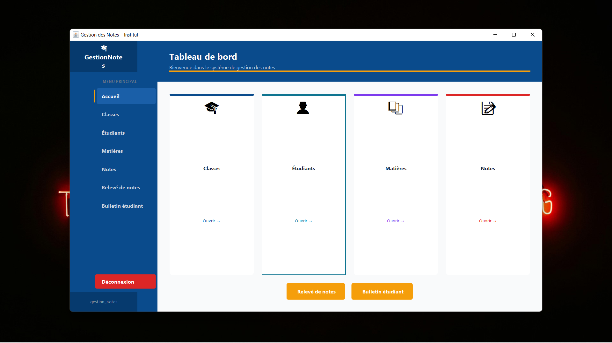
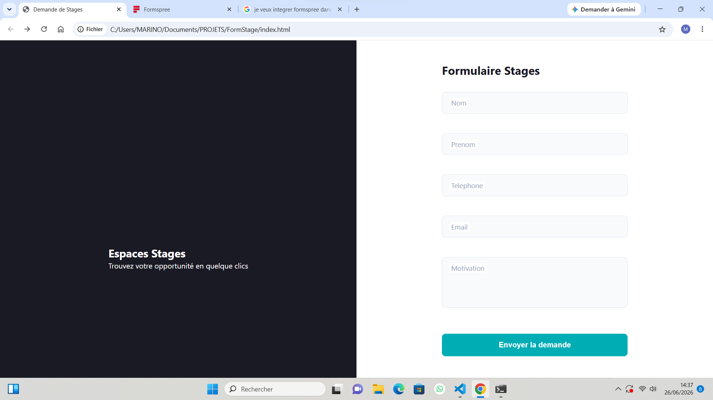
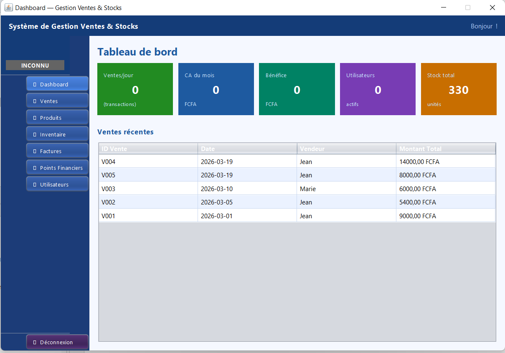
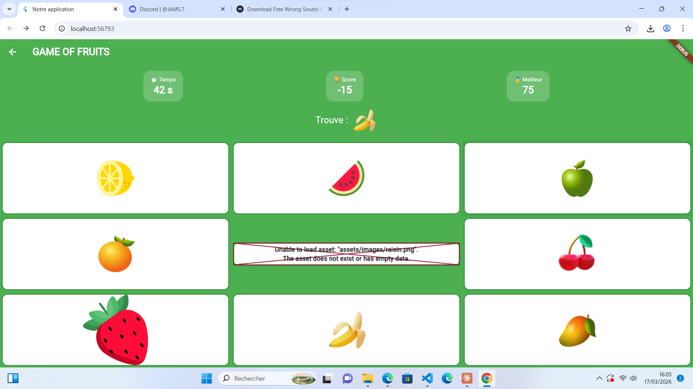
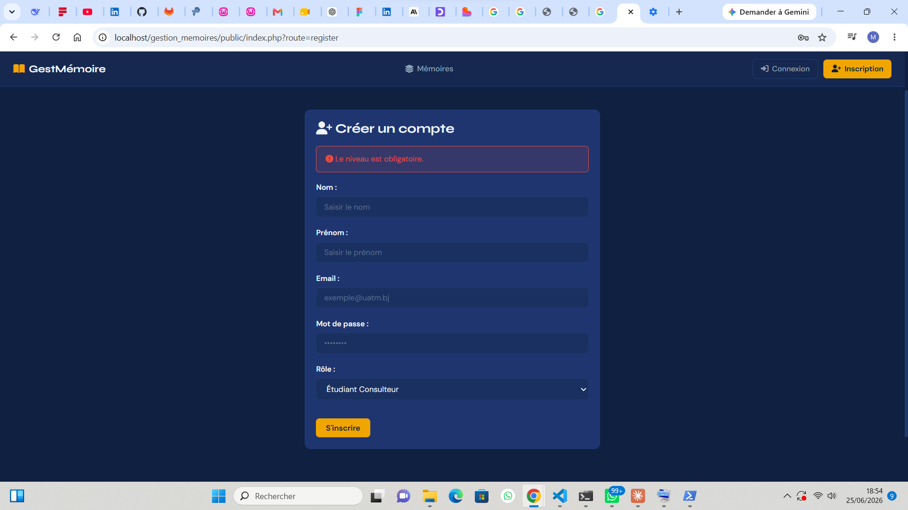

L'ensemble de mes réalisations, du front-end au back-end.
01

Gestion des Notes TERMINÉ
Application de gestion des notes d’étudiants développée en Java (Swing) avec base de données SQLite.
Architecture MVC, 8 modules fonctionnels (authentification, saisie des notes, consultation, bulletins, etc.).
Livré avec un guide utilisateur complet et une documentation technique détaillée.
Java Swing SQLite JDBC MVC
02
Golden Immo
Plateforme web complète de gestion d'agence immobilière — vente, location, gestion des clients, contrats, paiements et rapports financiers.
HTML5 CSS3 JavaScript PHP MySQL
03

Formulaire de Stages TERMINÉ
Page web de dépôt de candidature pour des stages, avec écran de chargement animé (loader),
mise en page split-screen (animation interactive à gauche, formulaire à droite),
labels flottants, validation des champs en temps réel (nom, prénom, téléphone, e-mail, motivation),
pop-up de confirmation après soumission, et design responsive adapté aux mobiles et tablettes.
HTML5 CSS3 JavaScript Font Awesome Formspree
04

Gestion Stock & Ventes
Application de gestion des stocks et des ventes avec inventaire physique,
validation des écarts, impression de rapports et mise à jour automatique des quantités.
Java PostgreSQL Swing JDBC
05

Jeu de Fruits
Jeu mobile et web développé avec Flutter : trouvez le fruit demandé dans une grille 3×3,
marquez des points et évitez les erreurs. Interface dynamique avec timer et retour visuel.
Flutter Dart Assets GitHub Pages
06

Gestion des Mémoires EN COURS
Application web de gestion de mémoires académiques avec authentification et gestion de rôles
(Étudiant diplômé, Consulteur, Professeur, Directeur d'études).
Fonctionnalités : dépôt de mémoires, évaluation par jury, likes, commentaires,
recherche multicritère et validation des diplômes.
PHP MySQL PDO MVC
Mentions légales
Ce site est un portfolio personnel édité par Marino AIDOMOAN, basé à Cotonou, Bénin. Il présente des projets et compétences à titre professionnel, sans activité commerciale directe en ligne. Le site est hébergé par Vercel Inc. Pour toute question, utilisez le formulaire de contact.
Politique de confidentialité
Les informations transmises via le formulaire de contact (nom, email, message) sont utilisées uniquement pour vous répondre. Elles ne sont ni revendues, ni partagées avec des tiers, ni utilisées à des fins de tracking ou de publicité. Aucun cookie de suivi n'est utilisé sur ce site.
.png)